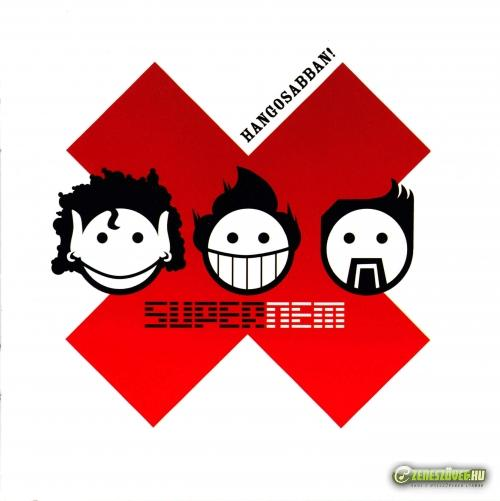
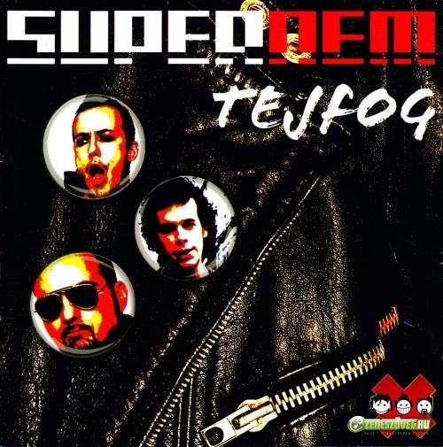
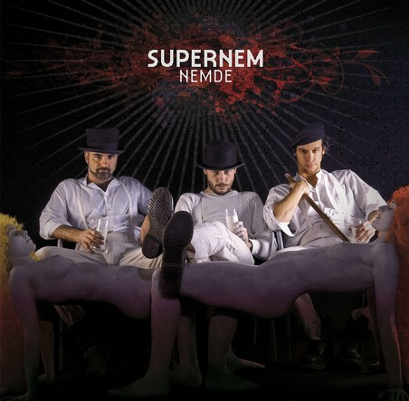
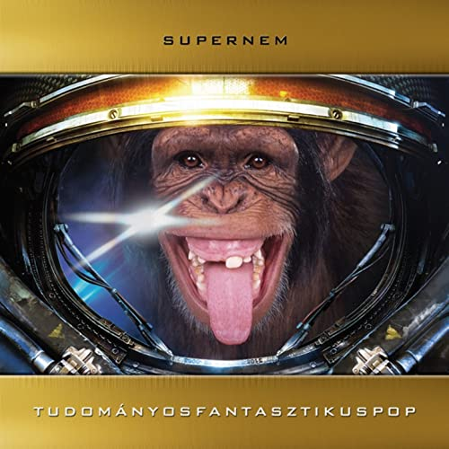
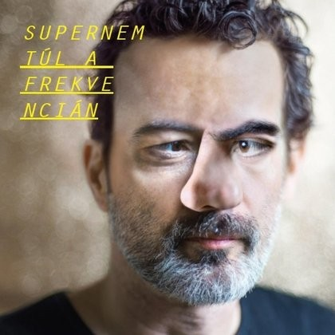
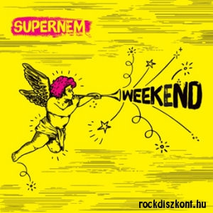

Supernem
A Supernem egy 2002-ben alakult magyar punk rock együttes, akik mostanság már rendszeres fellépőik magyar rock klubboknak és fesztiváloknak. Dalaik általában vidám hangulatúak és pörgősek változatos és ötletes szöveggel. Számaikban általában valamilyen jellegű társadalomkritikát fogalmaznak meg, ami néha a politikára, néha a fogyasztói társadalomra, néha az emberek zenei ízlésére vagy a bulvár kifigurázására irányul. Az eredeti felállásban Papp Szabolcs (basszusgitár és ének), Pulius Tibor (gitár és vokál) és Mózsik Imre (dobos) volt. Belőlük mára Mózsik Imrén kívül még mindenki maradt, azóta lett egy új tag Kubányi Bálint (billentyűs hangszerek) személyében, aki 2011-ben csatlakozott. Mózsik Imrét Nagy Dávid váltotta fel még 2016-ban és azóta nem volt változás.
Még az első évükben megjelent első kislemezük és az első videóklipjük a K-k-kétszer című számukhoz. 2003-ban megjelent első nagylemezük is Hangosabban! címmel. Az évek alatt nagyon sok daluk megragadt a köztudatban Mára már 6 albumot is kiadtak, amikről az akábbiakban lehet olvasni.
| Cím | Dátum | Hossz | Műfaj | Kiadó |
|---|---|---|---|---|
| Hangosabban! | 2003. május | 46 perc 45 mp | rock, punk rock | Gold Record |
| Tejfog | 2005. november 11. | 41 perc 02 mp | rock, punk rock | Gold Record |
| Nemde | 2007. november 5. | 35 perc 58 mp | rock, punk rock | Tom-Tom Records |
| Tudományos Fantasztikus Pop | 2011. április 16. | 27 perc 21 mp | rock, punk rock | 1G Records |
| Túl a frekvencián | 2014. május 2. | 28 perc 10 mp | rock, punk rock | Gold Record |
| Weekend | 2018. április 18. | 24 perc 24 mp | rock, punk rock | Gold Record |
Hangosabban!
A Hangosabban! névre hallgató albumjuk az elős albumjuk volt, ami 2003-ban jelent meg. Ez a lemez adta meg a kezdeti sikert nekik, hiszen váratlanul jól fogadta a közönség és felkapta őket. Az album összesen 46 percnyi szórakozást nyújt, ami 15 dalból áll(ebből 2 intró). Erről az albumról ismerős szám lehet a Rendőrsztori, a K-k-kétszer és a Csodagép is, valamint tartalmaz egy Induljon a banzáj feldolgozást is.
Tejfog
A Tejfog nevű album volt a második, ami 2005-ben készült el. Az album összesen 41 percre foglalja le az érdeklődőket, ami 11 dalból áll. Erről az albumról ismertebb szám lett a Majomdal, a Számolj rám és a Mit tennél is, valamint az egyik szám kapott egy angol verziót is Count Me Out névvel.
Nemde
A Nemde névvel ellátott albumjuk a harmadik volt, ami 2007-ben lett publikus. Az album összesen 36 percnyi szórakozást nyújt, ami 10 dalt tartalmaz. Erről az albumról ismerős szám lehet a Zsebre dugott kézzel, a Generáció és az Enyém-tied is.
Tudományos Fantasztikus Pop
A Tudományos Fantasztikus Pop a negyedik lemezük volt, ami 2011-ben látott napvilágot. Az album összesen 27 percnyi szórakozást nyújt, ami 9 dalból áll. Megjelenésekor az album a MAHASZ Top 40 album listáján a 14. helyre került. Erről az albumról ismerős szám lehet nagyjából az összes, de leginkább a Tudományos Fantasztikus Pop, az Elvileg és a Irány a moziba be!.
Túl a frekvencián
A Túl a frekvencián névre keresztelt albumjuk az ötödik volt, ami 2014-ben jelent meg. A lemez kijövetelekor felkerült a MAHASZ Top 40 album listájára, méghozzá előkelő 4. helyen. Az album összesen 28 percnyi szórakozást nyújt, ami 8 dalból áll. Erről az albumról ismerős dal lehet a Túl a frekvencián, a Egy a millióból és a Szívbemarkoló is.
Weekend
A Weekend névű albumjuk a hatodik volt, ami 2018-ban jelent meg, és jelenleg ez a legújabb. Az album összesen 24 percnyi szórakozást nyújt, ezzel ez eddig legrövidebb albumjuk, ami 10 dalból áll(ebből 2 intró). Amikor kijött az album a MAHASZ Top 40 album listáján a 37. helyen végzett. Erről az albumról ismerős szám lehet a Weekend, a Egy nap egy év és a Jelezz vissza is, valamint tartalmaz egy Péterfy Bori paródiát is, amiben még ő maga is énekel.